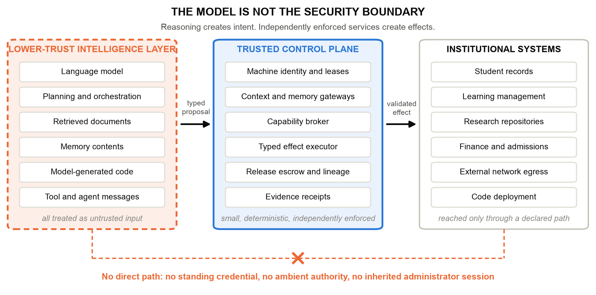
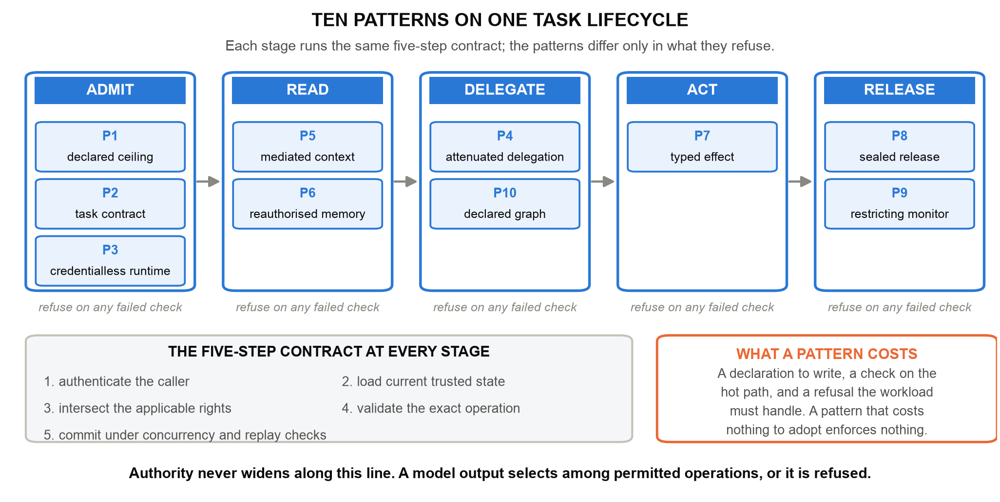

Scale Intelligence Without Scaling Implicit Authority
Enterprise Architect | AI Systems Researcher
UNU Macau AI Conference 2026 — “AI × Education: AI for Learning, Learning for AI” | Artifact: github.com/genaiworks/fssai-ra | Extended abstract
Agentic AI reads institutional records, writes memory, calls tools, spawns other agents and changes systems of record. The security question is no longer whether the model answers well, but what the software around it permits the model to cause. Trust by Construction treats the model as an untrusted source of proposals and admits every protected read, effect and disclosure through deterministic services the model cannot address or hold credentials for. This abstract states the architecture as a catalogue of ten design patterns under one rule — proof before power — and points to an Apache-2.0 reference kernel that binds each guarantee to an executable refusal.
A transcript assistant should retrieve the record it was asked about, propose a correction, and deliver the approved result to the registrar who asked. It should not open a second student's file because a retrieved document told it to, approve its own proposal, or keep delivering after the task was revoked. None of these is a reasoning failure; each is an authority failure, and authority belongs to the software around the model.
The 2026 compromise of widely used model-hosting infrastructure showed the sequence in practice: a conventional flaw opened the door, and standing credentials plus network reach decided the blast radius [1]. Indirect prompt injection against deployed applications is well established [2] and routinely reproducible inside ordinary tool-integrated tasks [3], and defences that hold on a static suite come apart when the deployment moves [4]. Learning institutions feel this first, because their agents touch student records, assessment, admissions and finance.

One rule governs the architecture. Before an agent receives more context, another tool, another agent, network reach, a consequential effect, or permission to release information, independently enforced software must establish that the requested power lies inside the active task, policy, data rights, processing zone and budget.
Its consequence is an asymmetry that must be built deliberately. A model output may select among operations the institution already permits, or trigger a restriction; it can never produce an operation outside that set. Authority is recomputed from current trusted state at every boundary, never cached. Assurance components may narrow authority automatically; only a named human operator restores it, within the ceiling the workload started with. If a detector's clean verdict could return a privilege, the detector would be the escalation path.
This generalises recent system-level defences — separating control flow from untrusted data [5], and the pattern-based containment argument for agent security [6] — and shares the assumption of AI-control research that safety must hold even when the reasoning layer is actively subverting the protocol [7].
A pattern is a small buildable thing: an implicit authority that agentic systems grant by accident, the structure that removes it, and an executable refusal that proves it gone. A pattern with no refusal is a slogan.
P1 declared ceiling — a machine-readable passport of approved models, data classes, zones, tools, destinations, delegation depth, budgets and permitted effects, with an inventory of every interface that can change or reveal something; undeclared interfaces are refused. P2 task contract — one purpose, subject, resource set, destination and expiry, with purpose enforced rather than documented. P3 credentialless runtime — short-lived scoped leases instead of standing database, cloud or signing credentials inside the model process. P4 attenuated delegation — a child inherits a subset of its ancestors' authority and draws on one shared task budget under depth and population caps. P5 mediated context — retrieval authorised before records reach the model, with a cumulative scope cap. P6 reauthorised memory — persistence as a privileged write, every later read reauthorised, derived data inheriting source restrictions, and operator quarantine of an exact source binding that survives restart. P7 typed effect — a typed intermediate representation with canonical identifiers and no credentials, SQL or shell, revalidated against version, replay state and destination before commit. P8 sealed release — approval bound to exact bytes and one recipient, rechecked per chunk, with no unguarded bulk path. P9 restricting monitor — assurance that may move a workload through RESTRICTED, PROPOSAL_ONLY, READ_ONLY and QUARANTINED, and never back. P10 declared graph — rejection of protected-source-to-public-sink paths across cooperating agents before the terminal agent acts.

P10 matters because per-agent least privilege stops being sufficient once agents cooperate. Three agents may each hold a defensible scope — read transcripts, summarise, post publicly — while the composition forms a path no single contract permits. Lineage travels with derived artifacts, and the declared graph is checked as a graph.
The catalogue is implemented as a public Apache-2.0 kernel that runs offline without model weights or a GPU. Dispatch authenticates the agent, intersects current authority, checks the declared graph, consumes the budget, validates the schema and revalidates the operation before committing its effect and receipt; rejected operations roll back while retaining the authenticated attempt, and evidence failure fails closed. Emergency stopping revokes authority before it attempts to write evidence, so a failed write cannot undo a stop.
Every written guarantee names a capability contract and a test that fails if its mechanism is removed. Scripted adversarial and benign fixtures over the declared interfaces — synthetic records, no student data, no production traffic — show the mechanisms holding under specified failures: staged containment of hostile proposals, 180 of 180 hostile scenarios contained across six domain profiles with 58 of 58 benign workflows completed, each of eight pattern ablations re-enabling its harmful action, and no counterexample within a bounded falsification search. Oracle, blind and hostile monitors admit no prohibited outcome; the hostile monitor drives useful work to zero, which is the availability cost the design accepts deliberately.
Purpose limitation maps onto the task contract exactly; student and assessment data require explicit subject and release boundaries; research agents need reach without institutional context; and assessment shows why an authorised action can still be wrong, a distinction the architecture preserves rather than blurs. For AI for Learning, the patterns make agent authority something a registrar reads in a declaration. For Learning for AI, the transcript example becomes an exercise in which learners watch a forged approval, a contaminated memory, a hostile monitor and a composed agent path each get refused — the architectural half of AI literacy that competency frameworks now ask for [9], and the same requirements that agentic security taxonomies set out for deployments [8].
The artifact is a digital public good rather than a product: openly licensed, offline, and published with its profiles, contracts, tests and generated evidence, so institutions least able to fund proprietary tooling can verify the claims rather than purchase assurance. It supports SDG 4 by protecting records and assessment integrity, SDG 9 by supplying auditable infrastructure for autonomous institutional workflows, and SDG 16 by making institutional authority explicit, bounded, revocable and evidenced.
Increasingly autonomous AI does not require increasingly implicit trust. It requires increasingly explicit architecture. Ten patterns, one rule, and a refusal behind every claim.
Scale intelligence. Bound authority. Preserve lineage. Verify continuously. Recover safely.
[1] Hugging Face (2026). Security Incident Disclosure - July 2026. Hugging Face. https://huggingface.co/blog/security-incident-july-2026
[2] K. Greshake et al. (2023). Not What You've Signed Up For: Compromising Real-World LLM-Integrated Applications with Indirect Prompt Injection. ACM Workshop on Artificial Intelligence and Security (AISec), pp. 79-90. https://doi.org/10.1145/3605764.3623985
[3] E. Debenedetti et al. (2024). AgentDojo: A Dynamic Environment to Evaluate Prompt Injection Attacks and Defenses for LLM Agents. Advances in Neural Information Processing Systems (Datasets and Benchmarks). https://arxiv.org/abs/2406.13352
[4] H. Li et al. (2026). AgentDyn: Are Your Agent Security Defenses Deployable in Real-World Dynamic Environments? arXiv preprint 2602.03117. https://arxiv.org/abs/2602.03117
[5] E. Debenedetti et al. (2025). Defeating Prompt Injections by Design. arXiv preprint 2503.18813. https://arxiv.org/abs/2503.18813
[6] L. Beurer-Kellner et al. (2025). Design Patterns for Securing LLM Agents against Prompt Injection. arXiv preprint 2506.08837. https://arxiv.org/abs/2506.08837
[7] R. Greenblatt, B. Shlegeris, K. Sachan and F. Roger (2024). AI Control: Improving Safety Despite Intentional Subversion. International Conference on Machine Learning (ICML). https://arxiv.org/abs/2312.06942
[8] OWASP GenAI Security Project (2025). OWASP Top 10 for Agentic Applications for 2026. OWASP Foundation. https://genai.owasp.org/
[9] UNESCO (2024). AI Competency Framework for Students. UNESCO, Paris. https://unesdoc.unesco.org/ark:/48223/pf0000391105